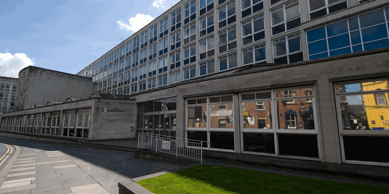
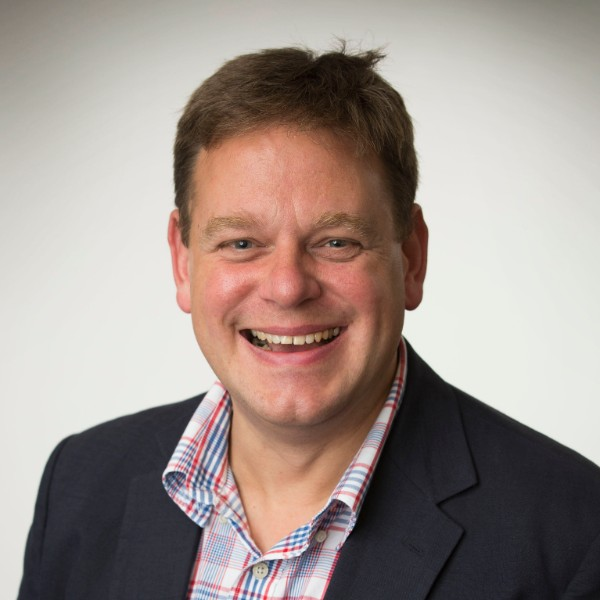

Visit Us
School of Civil Engineering
University of Leeds
Woodhouse Lane
Leeds, LS2 9JT
United Kingdom
Email Us
General & Research Enquiries:
m.f.king@leeds.ac.uk
Postgraduate Applications:
civil@leeds.ac.uk
Call Us
School of Civil Engineering:
+44 (0)113 343 2268
University Switchboard:
+44 (0)113 243 1751
Find Us

School of Civil Engineering
University of Leeds, Woodhouse Lane, Leeds LS2 9JT
Public Health & Environmental Laboratories
School of Civil Engineering (Controlled Aerobiology Chamber & Analytical Suites)
Public Transport
20 minutes' walk from Leeds City Station; served by Woodhouse Lane bus routes.
Get in Touch
Please email the relevant contact below; we aim to respond within two working days.
- General enquiries & research collaboration:
m.f.king@leeds.ac.uk (Dr Marco-Felipe King, Director of WPE) - Computational engineering & LIFD enquiries:
A.Khan@leeds.ac.uk (Dr Amirul Khan, Deputy Director of WPE) - Postgraduate (PhD & MSc) applications:
civil@leeds.ac.uk · P.Hutchings@leeds.ac.uk (MSc WASH Engineering) - Facilities & laboratory access:
D.J.S.Elliott@leeds.ac.uk (Dr David Elliott, Laboratory Technician)
Key Contacts

Dr Marco-Felipe King
Director of WPE; Lecturer in Building Engineering and Infection Transmission; Co-Director, EPSRC CDT in Future Fluid Dynamics
Theme: Indoor Air Quality & Airborne Infection

Dr Amirul Khan
Deputy Director of WPE; Associate Professor in Environmental Fluid Mechanics; Director, Centre for Computational Engineering
Theme: Data-Driven & Computational Methods
Prof. Cath Noakes OBE
Professor of Environmental Engineering for Buildings; Pro-Dean for Research & Innovation
Theme: Indoor Air Quality & Airborne Infection
Prof. Barbara Evans
Professor of Public Health Engineering; Deputy Head of School of Civil Engineering
Theme: Sanitation, Wastewater & Faecal Sludge Management

Prof. Martin Tillotson
Professor of Water Management; Director, water@leeds
Theme: Water Supply & Treatment

Dr Miller Alonso Camargo-Valero
Associate Professor in BioResource Systems
M.A.Camargo-Valero@leeds.ac.uk
Theme: BioResources & the Circular Economy
Frequently Asked Questions
Doctoral applications are processed through the School of Civil Engineering Postgraduate Research portal, as well as the EPSRC CDT in Future Fluid Dynamics. For enquiries about our cross-faculty MSc in Water, Sanitation and Health Engineering, please contact Dr Paul Hutchings at P.Hutchings@leeds.ac.uk.
We welcome collaborations with academic institutions, NHS trusts, water utilities, industry partners, and governmental organisations. Please contact Dr Marco-Felipe King at m.f.king@leeds.ac.uk to discuss joint research or commercial evaluation in our laboratories.
Yes, we arrange guided visits of our laboratories and walk-in aerobiology chamber for academic collaborators, industry partners, and prospective postgraduate researchers. Please email m.f.king@leeds.ac.uk or D.J.S.Elliott@leeds.ac.uk.
Full details of our 2026–2027 seminar series and the WPE All-Hands in Leeds Week (10–14 May 2027) are available on our Cake Meetings and News & Blog pages.